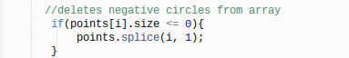

The goal of the art I tried to create could be compared to a miniature firework. There would be an explosion at the mouse's position every time the mouse was clicked.
Here is my art!To create this art, I used a function, a loop, a conditional, and some method of interaction.
I created a function called Point, which I put into an array. The function is called "Point" because it is where all the different points of the explosion would be created and moved.
Here, I named all the coordinate for the ellipses I would need. I use these variables later on in the code.
There were many other functions within this array. There was a this.draw function, which tells the program how to draw the circles I needed.
There was also a this.change function, which told the program how to change the circle's position (or move the circles) in the way that I wanted them to be moved.
As you can see, some of the circles were moving "faster" than others. The higher the number, the farther apart the circles are placed, which gives the effect of motion when they are being drawn.
To make my circular pattern move in the way I wanted it to, I used a for loop.

The loop will run for as long as points.length (it will keep running through all the items in the Point function). Each time it runs, it will draw a point and change it according to the value I had written in the code earlier.
My conditional was an if statement.
If I hadn't included this conditional, the code would keep creating ellipses, even though the sizes were getting smaller. There would've been circles with negative sizes, which would slow down the art if it was being clicked for long enough. By including this if statement, it tells the program to delete the point if the ellipse shrank to a negative size. This increases the efficiency of the art.
The interaction I chose to have was mouse interaction.
By setting the x and y positions of the ellipses to mouseX and mouseY, the ellipses would appear wherever my mouse would be on the canvas.
When the mouse is clicked, it creates a new point in the array at the spot where the mouse is. This will cause the explosion to happen at the mouse's position.
When the mouse is moved, an ellipse will follow the mouse because I set its coordinates to the position of the mouse.
There were many choices I had to make during this project, such as "What should I make?" and "What would happen if wrote this piece of code? How would it affect the way my art is created?" To decide, I thought about what kind of art I would want to see on the screen. Then I tested out certain pieces of code I wasn't sure about to see the effects it would have. If I liked what I saw, I kept it.
I learned a lot of things from this project. A lot of this stuff was new to me. I had taken programming classes before, but I never really understood how it worked until I took this expedition class. So all the different elements to coding and key terms were new to me. I would be sure to remember this because they are what created my first piece of art. They told the computer what to do, and it worked!
If I had to name one specific thing to remember, it would be the different terms to coding. Coding is almost like another language based off of English. If I wanted to code again later in the future (maybe even as a career), then I'd have to remember how to change the background, how to create circles, and how to include mouse interaction.
If I had infinite time, I would focus on making my project seem even more like fireworks. I would include a trailing spark whenever the mouse moved, or glittering colors after the explosion. I would also add the ability to change color during the explosion to make the fireworks seem more realistic. But above all else, I would just tinker with the code and watch to see what happens unexpectedly.
Another thing that affected my choices was my knowledge. Since I am new to programming, I don't know many functions or coding tricks that would've made the creation of my art easier and faster. I had to take this into account and try to fit the pieces together. After Mr. Hesby introduced me to what an array was and how it worked, that's when everything fell into place, and I was able to complete this project. However, since it was a new concept, I didn't fully understand how arrays work, and why everything had to be coded in a specific way. After asking many questions and a few trials, I was able to gain a greater understanding of what arrays did in coding.
Many times, there was a piece of code that I'd thought was being used, but it really wasn't. I had to delete that code block to clean up my code and figure out a place rewrite it where it would be useful and essential at the same time. Comments helped a lot in figuring out what I was doing because with all those lines of code, I would've easily gotten lost and forgotten which command was for what. It would've taken me a lot longer to complete and understand this project.
The project works great overall. It was what I had envisioned for it to be. The hardest part for creating this piece of art would've been how to put it all together. I knew the different elements to making this happen, but I had trouble piecing it together. Thanks to my uncle and Mr. Hesby, I was able to create and finish my art successfully.